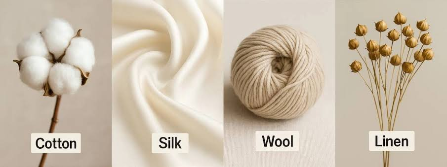
DO NOT BOTHER YOURSELF THE BRIGHT ONE, THERE ARE SO MANY REASONS YOU NEED TO STUDY TEXTILES.
CLICK ON EACH OF THE IMAGES FOR PROPER VIEW
Introduction to Textiles
Textiles are defined as flexible materials composed of networks of natural or artificial fibers, commonly referred to as thread or yarn. These materials are formed by weaving, knitting, crocheting, knotting, tatting, felting, bonding, or braiding these fibers together to create cloth or fabric. The study of textiles encompasses the entire process from raw fiber to finished product, including the cultural, historical, economic, and artistic dimensions of fabric production. Textiles serve as one of humanity's oldest and most essential technologies, providing not only clothing and shelter but also serving as vehicles for artistic expression, cultural identity, and technological innovation throughout human civilization.
The history of textiles stretches back to prehistoric times, with archaeological evidence suggesting that humans have been manipulating fibers to create fabrics for at least 100,000 years. Early humans used simple techniques such as twisting plant fibers together to create rudimentary cords and strings, which eventually evolved into more complex weaving methods. The development of textiles paralleled the rise of human civilization, with ancient cultures in Mesopotamia, Egypt, China, and the Indus Valley all developing sophisticated textile production methods independently. These early textiles were primarily functional, serving as protection against the elements, but they quickly acquired decorative and symbolic significance, with patterns and colors indicating social status, tribal affiliation, and religious beliefs.
The textile industry has undergone revolutionary transformations throughout history, from the manual labor of ancient weavers to the mechanized production of the Industrial Revolution and the automated, computer-controlled manufacturing of today. The invention of the spinning jenny, power loom, and cotton gin in the 18th and 19th centuries dramatically increased textile production capacity, making fabrics more accessible to broader populations while simultaneously reshaping global economies and labor structures. The 20th century brought synthetic fibers derived from petroleum products, expanding the range of textile properties and applications exponentially. Today, the textile industry stands at the intersection of tradition and cutting-edge technology, incorporating nanotechnology, biotechnology, and digital manufacturing into fabric production while simultaneously grappling with the environmental and social impacts of globalized mass production.
Textiles are fundamentally categorized based on their fiber sources, which divide into natural and synthetic classifications. Natural fibers are derived from plant sources such as cotton, flax (linen), hemp, and jute, or from animal sources including wool from sheep, silk from silkworms, and various hair fibers from goats, rabbits, and other mammals. Each natural fiber possesses distinct characteristics: cotton is soft, breathable, and absorbent; wool provides excellent insulation and moisture-wicking properties; silk offers unparalleled luster and drape; and linen is renowned for its strength and coolness in warm weather. These inherent properties have made natural fibers the foundation of textile production for millennia, and they remain highly valued in contemporary textile markets despite the prevalence of synthetic alternatives.
Synthetic fibers, which emerged in the early 20th century, revolutionized the textile industry by introducing materials with engineered properties that could not be achieved with natural fibers alone. Rayon, developed in the late 19th century as an artificial silk, marked the beginning of the synthetic fiber era, followed by the invention of nylon in 1935 by Wallace Carothers at DuPont, which was introduced commercially in 1940. Polyester, acrylic, spandex (elastane), and polypropylene followed, each offering specific performance characteristics such as extreme durability, elasticity, water resistance, or thermal insulation. These synthetic fibers enabled the development of performance textiles for athletic wear, industrial applications, and specialized technical uses that natural fibers could not adequately serve, fundamentally expanding the functional possibilities of fabric.
The cultural significance of textiles extends far beyond their utilitarian functions. In virtually every human society, textiles have served as important markers of identity, status, and cultural heritage. Traditional textile techniques often carry deep cultural meanings, with specific patterns, colors, and motifs encoding historical narratives, religious beliefs, and social structures. The intricate kente cloth of the Akan people of Ghana, the elaborate tapestries of medieval Europe, the refined silk brocades of imperial China, and the vibrant woven textiles of Andean cultures all demonstrate how fabric serves as a medium for cultural expression and preservation. Textile arts have historically been associated with women's work in many cultures, though the economic value of textile production has often been underestimated despite its crucial role in household economies and international trade.
The contemporary textile industry faces significant challenges related to environmental sustainability, labor practices, and resource consumption. Textile production is one of the most resource-intensive industries globally, consuming vast quantities of water, energy, and chemicals while generating substantial pollution and waste. The rise of fast fashion has accelerated consumption patterns, leading to increased textile waste and environmental degradation. In response, the industry is increasingly embracing circular economy principles, developing biodegradable and recycled fibers, implementing waterless dyeing technologies, and exploring innovative materials such as fabrics made from agricultural waste, algae, and mycelium. These sustainability initiatives represent a fundamental shift in how textiles are conceived, produced, and consumed, pointing toward a future where fabric production aligns more closely with ecological limits and social responsibility.
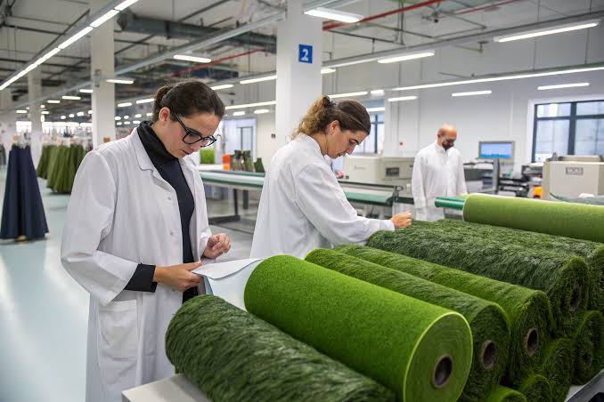
Textiles weave together the threads of human history, from ancient survival to modern expression.
Elements and principles of textile design
The principal element of textile design is the fiber itself, which constitutes the fundamental building block of all fabrics. The selection of fiber determines the essential characteristics of the finished textile, including its texture, weight, drape, durability, and care requirements. Designers must possess intimate knowledge of fiber properties to create textiles that fulfill both aesthetic and functional objectives. The fiber's natural color, luster, and texture provide the foundational palette upon which all subsequent design elements are constructed, making fiber selection the most critical decision in the textile design process. Understanding how different fibers interact with dyes, finishes, and mechanical processes enables designers to predict and control the final appearance and performance of their creations.
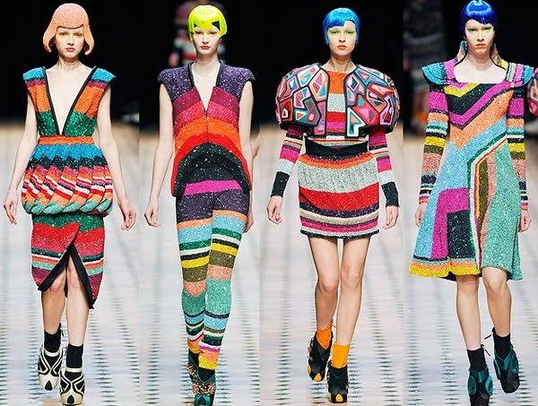
The principal element of textile design is the fiber, determining texture, weight, drape, and durability.
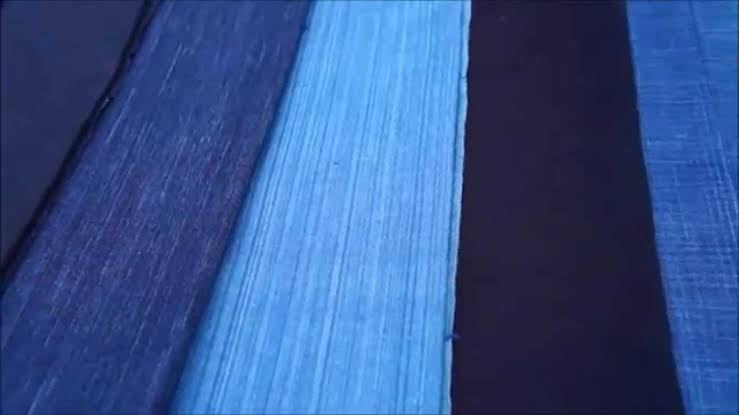
Color in textiles operates through dyes and pigments that bond with fiber surfaces, creating visual impact.
Fiber types and properties
Natural fibers derived from plant and animal sources constitute the historical foundation of textile production and remain essential materials in contemporary manufacturing. Cellulosic plant fibers, including cotton, flax (linen), hemp, jute, and ramie, are composed primarily of cellulose polymers that provide strength, absorbency, and biodegradability. Cotton, the most widely used natural fiber globally, consists of pure cellulose with a hollow, convoluted structure that contributes to its softness, breathability, and moisture absorption capacity. Flax fibers, extracted from the bast layer of the flax plant stem, are among the strongest natural fibers, exhibiting exceptional coolness and luster that improve with repeated washing and wearing. Animal protein fibers, notably wool and silk, offer distinct thermal and aesthetic properties: wool's crimped, scaly surface creates insulating air pockets and enables felting, while silk's continuous filament structure produces unparalleled smoothness, strength, and luminosity.
Natural fibers from plant and animal sources constitute the historical foundation of textile production.
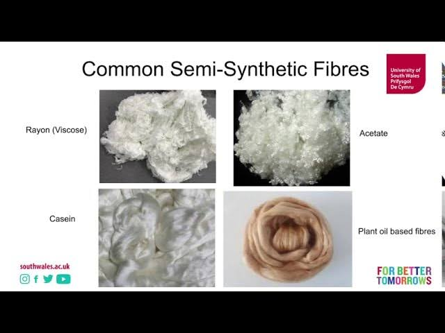
Synthetic fibers engineered from petrochemicals have dramatically expanded textile functional capabilities.
Weaving and construction methods
Weaving represents the most fundamental and historically significant method of fabric construction, involving the perpendicular interlacement of two sets of yarns: the warp (lengthwise threads under tension on the loom) and the weft (crosswise threads interlaced through the warp). This structural system dates back to at least 7000 BCE, with archaeological evidence of woven textiles found in ancient civilizations across the globe. The basic weaving process requires shedding (creating an opening between warp threads), picking (inserting the weft through the shed), and beating (compacting the inserted weft into the fabric edge). Despite this apparent simplicity, weaving encompasses an extraordinary range of structural variations that produce fabrics with vastly different appearances, textures, and performance characteristics. The loom, whether a simple backstrap frame or a complex computerized Jacquard machine, provides the mechanical framework that enables systematic yarn interlacement.
Plain weave, the most basic and common weave structure, follows a simple one-up, one-down interlacement pattern where each weft thread passes alternately over and under successive warp threads. This fundamental structure produces strong, durable fabrics with balanced properties but limited surface interest, serving as the foundation for muslin, percale, taffeta, and canvas. Variations on plain weave include basket weave (grouping warp and weft threads in pairs or larger units) and rib weave (using disproportionately sized warp or weft yarns to create corded effects). The ubiquity of plain weave in textile history testifies to its efficiency and versatility, providing a reliable ground for printing, embroidery, and other decorative treatments while offering excellent structural integrity for utilitarian applications.
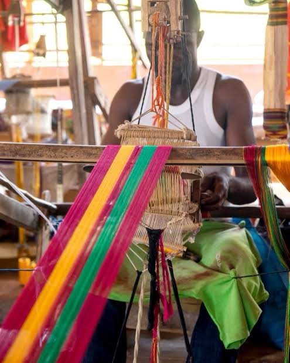
Weaving involves the perpendicular interlacement of warp and weft threads, dating back to 7000 BCE.
Relationship between textiles and other art forms
The bond between textiles and other art forms is profoundly intimate, rooted in the shared foundations of materiality, color, pattern, and cultural expression. Textiles have historically served as a critical bridge between fine art and functional craft, occupying a unique position that combines aesthetic ambition with practical utility. The relationship is closest with painting, particularly in the domain of tapestry, where woven textiles have translated painted designs into large-scale pictorial compositions for millennia. Medieval and Renaissance tapestry workshops employed painters, known as cartoonists, to create full-scale painted designs that weavers then interpreted in colored weft threads. This collaborative process established a direct material connection between textile and painting, with the woven medium translating chromatic and compositional ideas into tactile, durable wall coverings that served both decorative and insulating functions in castle and cathedral interiors.
On autonomous textile works, too, the close connection with painting is evidenced by the stylistic features that are common to both. Textile and painting agree in many details of content and form. Measurements; proportions of figures; relationship of figure to surrounding space; the distribution of the theme within the composition according to static order, symmetry, and equilibrium of the masses or according to dynamic contrasts, eccentric vanishing points, and overaccentuation of individual elements; rhythmic order in separate pictorial units in contrast to continuous flow of lines—all of these formal criteria apply to both art forms. The uniform stylistic character shared by textile and painting is often less severely expressed in the former because of the technical constraints of the weaving process, or the spontaneous flow of the embroiderer's stitch, or the struggle for form as recorded in the adjustments of pattern repeat and color matching.
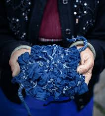
Textiles serve as a critical bridge between fine art and functional craft, combining aesthetic ambition with utility.Still closer, perhaps, is the bond between textiles and sculpture, which works with three-dimensional form. Textile sculpture, including stuffed, molded, and constructed fiber art, challenges the traditional boundaries between these disciplines. The soft, pliable nature of fabric allows for organic, flowing forms that rigid sculptural materials cannot easily achieve, while techniques such as wrapping, binding, and suspending textiles introduce temporal and spatial dimensions that static sculpture often lacks. Artists like Magdalena Abakanowicz and Sheila Hicks have demonstrated how textile techniques can produce monumental sculptural works that occupy and transform architectural spaces. The fiber art movement of the 1960s and 1970s explicitly sought to elevate textiles from craft to fine art status, employing weaving, knotting, and felting techniques to create non-functional sculptural forms that challenged established art world hierarchies.
Surface treatments and finishes
The surface of a textile fabric represents the primary interface between the material and both the human body and the external environment, making surface treatments and finishes among the most consequential processes in textile production. These treatments modify the aesthetic, functional, and protective properties of fabrics without fundamentally altering their structural construction. Mechanical finishes employ physical forces to modify fabric surfaces: calendering passes fabric between heated rollers under pressure to produce smooth, lustrous, or embossed surfaces; napping raises surface fibers through wire brushing to create soft, insulating pile; shearing cuts raised fibers to uniform height for velvet-like smoothness; and sanforizing pre-shrinks fabrics through mechanical compression and moisture application. These mechanical processes can transform the hand, appearance, and performance of base fabrics, enabling a single woven structure to serve diverse end uses through surface modification alone.
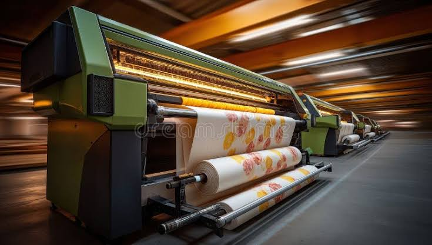
Surface treatments modify aesthetic, functional, and protective properties without altering structural construction.
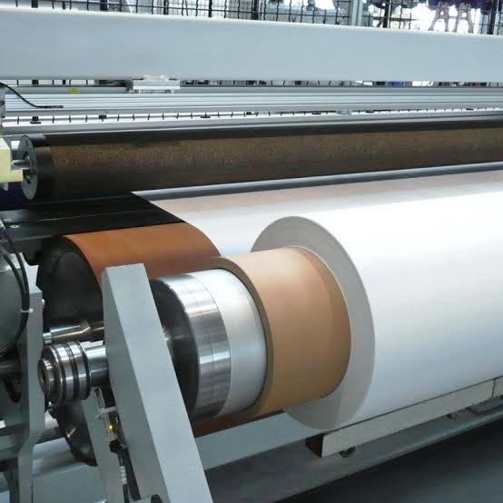
Chemical and mechanical finishes transform base fabrics for diverse functional and aesthetic applications.
Tools and techniques of textile production
The tools and techniques of textile production span from ancient hand implements to sophisticated automated machinery, reflecting the evolution of human technology and the increasing scale of fabric manufacturing. The fundamental tools of fiber preparation include cards (wire brushes that align fibers for spinning), combs (for removing short fibers and parallelizing long staple), and hackles (for processing flax and other bast fibers). Spinning tools have evolved from simple spindle whorls, which add momentum to hand-twisted yarn, through the spinning wheel, which mechanized fiber drafting and twist insertion, to modern ring spinning frames and open-end rotor spinners that produce yarn at industrial speeds. These spinning technologies determine yarn characteristics including fineness, twist level, strength, and evenness, which in turn influence the quality and performance of woven or knitted fabrics.
No less varied than the nature and composition of these tools is their aesthetic effect on the finished textile. Hand-spun yarns, produced on drop spindles or traditional spinning wheels, retain irregularities and character that machine-spun yarns cannot replicate, making them prized for artisanal and heritage textiles. The great wheel, or walking wheel, used for spinning wool in pre-industrial Europe, produced softly twisted yarns suited to the woolen cloth tradition. The charkha, Gandhi's symbol of Indian self-reliance, enabled the production of khadi cotton that supported the Swadeshi movement. Industrial spinning frames, from Arkwright's water frame to modern air-jet spinning, prioritize efficiency and consistency, producing uniform yarns optimized for high-speed weaving and knitting. The selection of spinning technique depends on fiber type, desired yarn properties, production scale, and economic considerations.
Spinning
Spinning is the fundamental process of drawing out and twisting fibers to create continuous yarn or thread, representing the essential transformation from discontinuous fiber to coherent textile material. This process dates back to the Upper Paleolithic period, with evidence of twisted cordage found at archaeological sites over 20,000 years old. The earliest spinning tools were simple wooden spindles weighted with stone or ceramic whorls, which stored rotational energy and maintained momentum during yarn formation. The spinner would draw fibers from a prepared mass, attach them to the spindle, set it rotating by rolling the shaft against the thigh or dropping it while suspended, and allow the twist to run into the newly formed yarn. This hand-spinning process, though laborious, allowed for considerable control over yarn characteristics and remained the dominant production method until the Industrial Revolution.
The spinning wheel, introduced to Europe from Asia during the Middle Ages, mechanized the twist insertion process by replacing the drop spindle with a rotating spindle mounted in a frame and driven by a hand-cranked wheel. This innovation increased spinning productivity approximately tenfold and enabled the development of the European textile industry that would eventually dominate global trade. The great wheel, or wool wheel, used for spinning short-staple fibers, employed a direct-drive mechanism where the spindle rotated at high speed while the spinner walked backward to draft the fibers. The flax wheel, or Saxony wheel, introduced a flyer mechanism that wound the newly spun yarn onto a bobbin while continuing to insert twist, enabling continuous operation without stopping to wind. These technological refinements progressively reduced the labor intensity of yarn production while improving consistency and quality.
The Industrial Revolution brought mechanized spinning to unprecedented scales, with Richard Arkwright's water frame (1769), Samuel Crompton's spinning mule (1779), and subsequent ring spinning and open-end spinning technologies automating the entire yarn formation process. Ring spinning, introduced in the 1820s and still dominant for high-quality yarns, draws fibers through rollers, inserts twist via a rotating traveler on a ring, and winds the yarn onto a rotating bobbin. Open-end or rotor spinning, developed in the 1960s, separates the twisting and winding functions, using a rapidly spinning rotor to collect fibers and insert twist independently, enabling much higher production speeds at some cost to yarn quality. Air-jet spinning, introduced in the 1980s, uses vortex air currents to wrap fibers around a core, producing yarn at speeds exceeding 400 meters per minute.
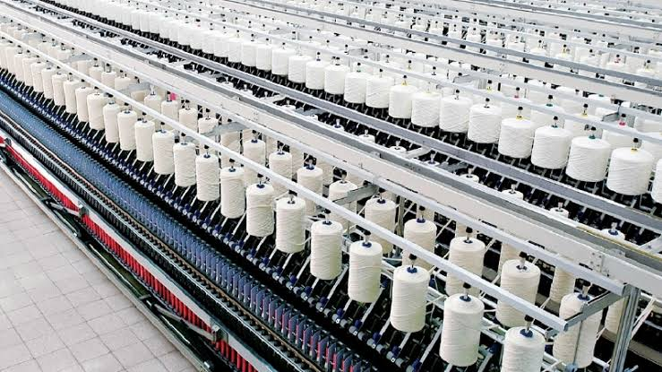
Spinning transforms discontinuous fibers into continuous yarn through drawing and twisting processes.
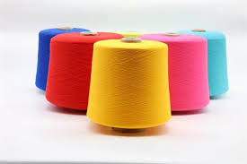
Hand-spinning on traditional wheels produces yarns with character that machine spinning cannot replicate.
Dyeing
Dyeing is the process of applying color to textile materials through the absorption of dyes or pigments into fiber structures, representing one of the most transformative and technically demanding aspects of textile production. The history of textile dyeing extends to prehistoric times, with archaeological evidence of dyed fabrics dating to the Neolithic period in regions across Europe, Asia, and the Americas. Early dyers relied on natural colorants extracted from plants (roots, bark, leaves, and fruits), animals (insects and shellfish), and minerals (clays and metal oxides), developing sophisticated knowledge of mordants—metallic salts that fix dyes to fibers—and auxiliary chemicals that modified color yield and fastness. These traditional dyeing systems were deeply embedded in local ecological knowledge and cultural practice, with specific dye plants and techniques serving as markers of regional identity and craft tradition.
The chemistry of dyeing depends fundamentally on the molecular structure of both the dye and the fiber substrate. Direct dyes, which are primarily used for cellulosic fibers like cotton, possess sufficient molecular size and affinity to bond directly with fiber surfaces without mordants. Acid dyes, suited to protein fibers like wool and silk, carry negative charges that bond with positively charged amino groups in the fiber structure. Vat dyes, including the historically significant indigo, are insoluble in their colored form and must be reduced to a soluble, colorless leuco state for application, then oxidized back to the insoluble colored form within the fiber. Reactive dyes, developed in the 1950s, form covalent bonds with fiber molecules, providing exceptional wash fastness and brilliant colors that revolutionized cotton dyeing. Disperse dyes, used for hydrophobic synthetic fibers like polyester, rely on their small molecular size to penetrate fiber structures and deposit within the polymer matrix.
Dyeing can be performed at various stages of textile production, each offering distinct advantages and constraints. Fiber or stock dyeing applies color to loose fibers before spinning, producing heathered or melange effects in the final yarn and ensuring excellent color penetration. Yarn dyeing, performed on skeins, packages, or beams, enables the creation of patterned woven or knitted fabrics through the use of differently colored warp and weft threads. Piece dyeing applies color to woven or knitted fabric in rope or open-width form, providing economical production of solid-colored goods with good color consistency. Garment dyeing dyes completed garments, allowing for fashion flexibility and the creation of vintage, washed, or overdyed effects that cannot be achieved through fabric dyeing. The selection of dyeing stage depends on product requirements, production economics, and desired aesthetic outcomes.
Traditional indigo dyeing, practiced across Asia, Africa, and the Americas for millennia, exemplifies the cultural and technical sophistication of natural dyeing systems. Indigo, derived from plants of the genera Indigofera, Persicaria, and Isatis, produces the characteristic blue color that has adorned textiles from Japanese kimonos and African adire cloth to European workwear and American denim. The indigo vat requires careful maintenance of reducing conditions through fermentation or chemical agents, with experienced dyers managing pH, temperature, and reduction potential to achieve consistent results. Multiple immersions build color depth, with each dip adding layers of dye that eventually produce the deep, rich blues associated with quality indigo work. The Japanese tradition of aizome, the West African adire eleko resist technique using cassava paste, and the Indian bandhani tie-dye method all demonstrate how indigo dyeing became a vehicle for elaborate patterning and cultural expression.
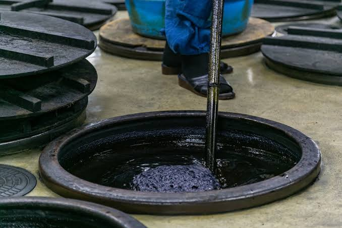
Indigo dyeing, practiced globally for millennia, exemplifies the cultural sophistication of natural colorants.
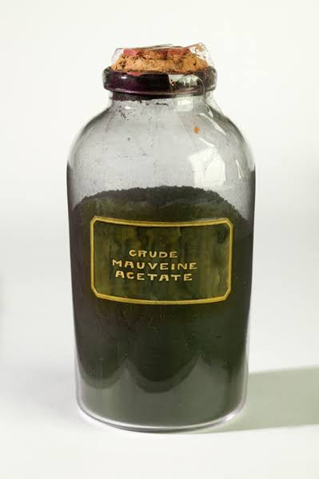
Resist dyeing techniques transform simple color application into sophisticated patterning systems.
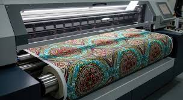
Digital dyeing enables photorealistic imagery and on-demand production without conventional setup costs.
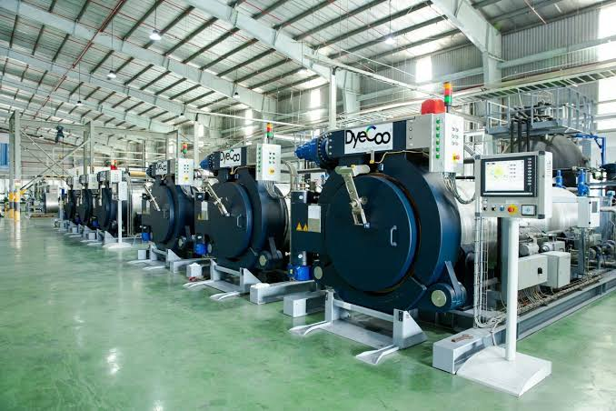
Modern dyeing emphasizes sustainability through natural dyes, low-impact synthetics, and waterless technologies.
Printing
Textile printing is the process of applying colored patterns to fabric surfaces through localized dye or pigment deposition, distinct from dyeing which colors entire fabric uniformly. This decorative technique has ancient origins, with evidence of printed textiles found in Egypt dating to the 4th century BCE and block-printed fabrics discovered in archaeological sites across India, China, and Central Asia. The fundamental principle involves transferring colorant paste to specific fabric areas through a resist or stencil mechanism, leaving unprinted areas in the base fabric color. Printing offers design flexibility that weaving cannot easily achieve, enabling photorealistic imagery, complex gradations, and large-scale patterns that would require impractical numbers of differently colored warp and weft threads in woven constructions. The development of printing technologies has progressively expanded the range of achievable effects while reducing production costs and environmental impact.
The four main methods of textile printing are block, roller, screen, and heat transfer printing, each with distinct production characteristics and aesthetic capabilities. Block printing, the oldest technique, uses hand-carved wooden or linoleum blocks that are dipped in color paste and stamped onto fabric surfaces. This artisanal method produces subtle variations between impressions that contribute to its handmade appeal, and it remains significant for heritage crafts and high-end fashion applications where mechanical precision would appear sterile. Roller printing, mechanized in 1783, uses engraved copper cylinders to transfer patterns continuously onto fabric passing between a central pressure drum and the printing rollers. This method enables high-speed production of complex multi-color designs but requires substantial setup investment in engraved rollers, making it economical only for long production runs of the same pattern.
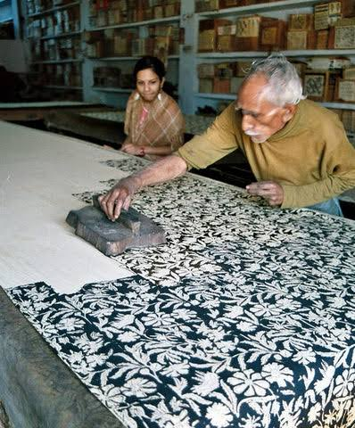
Textile printing applies colored patterns through localized dye deposition, distinct from uniform dyeing.
Embroidery
Embroidery is the art of decorating fabric with needle and thread, creating ornamental designs through stitched patterns that sit atop or penetrate a ground material. This technique represents one of humanity's oldest textile arts, with archaeological examples dating to the Iron Age and evidence suggesting even earlier origins in the Neolithic period. Unlike weaving or knitting, where structure and decoration are integrated, embroidery applies decorative elements to an existing fabric substrate, allowing for limitless design variation independent of the base material's construction. The fundamental embroidery stitches—running stitch, back stitch, satin stitch, chain stitch, and buttonhole stitch—have remained essentially unchanged for millennia, though their combination and interpretation have produced regional styles of extraordinary diversity and sophistication. The portability of embroidery tools—needles, thread, and small frames—has made this art form accessible across social classes and geographic regions, contributing to its ubiquity in traditional dress, religious vestments, and domestic furnishings.
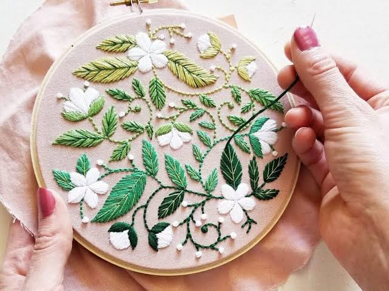
Embroidery decorates fabric with needle and thread, creating ornamental designs atop a ground material.
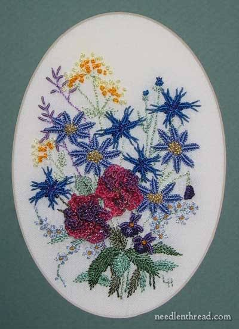
Embroidery materials include ground fabrics, threads, and needles selected to suit the desired effect.
Modern textile technology
Modern textile technology encompasses the convergence of advanced materials science, digital manufacturing, electronics, and biotechnology to create fabrics with capabilities that extend far beyond traditional textile functions. Smart textiles, also known as e-textiles or intelligent fabrics, integrate sensing, actuation, and communication capabilities directly into textile structures, transforming passive materials into active systems that can monitor physiological signals, respond to environmental stimuli, and communicate with digital networks. These technologies rely on conductive fibers, textile-based sensors, and flexible electronic components that maintain the drape, comfort, and washability expected of conventional fabrics while adding functionalities previously associated with rigid electronic devices. The development of smart textiles represents a paradigm shift in which fabric becomes an interface between the human body and the digital world, enabling applications in healthcare monitoring, athletic performance optimization, military operations, and fashion expression.
Smart textiles integrate sensing, actuation, and communication capabilities directly into fabric structures.
Sustainability and circular economy
The contemporary textile industry faces urgent sustainability challenges that have catalyzed innovation in materials, manufacturing processes, and business models. Textile production consumes an estimated 93 billion cubic meters of water annually and contributes approximately 10% of global carbon emissions, with synthetic fiber production relying heavily on petroleum feedstocks and generating microplastic pollution through fiber shedding during washing and wearing. The fast fashion model, characterized by rapid trend turnover and low-cost disposable garments, has accelerated consumption rates to unsustainable levels, with the average garment now worn only seven to ten times before disposal. In response, the industry is increasingly adopting circular economy principles that prioritize resource efficiency, waste reduction, and material recovery throughout the product lifecycle.
The textile industry adopts circular economy principles prioritizing resource efficiency and waste reduction.
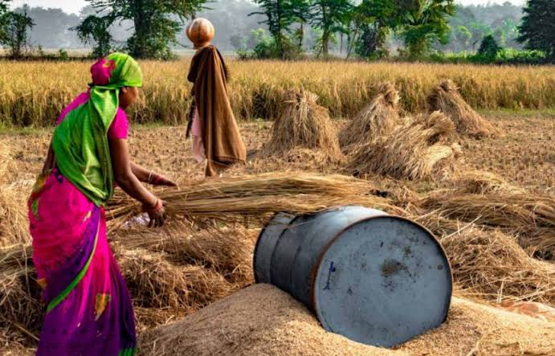
Bio-based fibers and agricultural waste materials transform byproducts into valuable textile resources.
Future of textiles
The future of textiles lies at the intersection of biological integration, artificial intelligence, and regenerative design principles that fundamentally reimagine the relationship between fabric, body, and environment. Bio-integrated textiles incorporate living organisms—bacteria, algae, and fungal mycelium—into fabric structures to create materials that can photosynthesize, biodegrade, self-repair, and respond to biological signals. Researchers have developed bacterial cellulose fabrics grown in culture vessels, eliminating the agricultural land use and pesticide application associated with cotton cultivation. Mycelium-based leather alternatives, cultivated from fungal networks on agricultural waste substrates, provide biodegradable, cruelty-free materials with leather-like properties. These bio-fabrication approaches represent a shift from extractive manufacturing to regenerative production systems that consume waste rather than generating it, though significant challenges remain regarding scalability, consistency, and cost competitiveness with conventional materials.
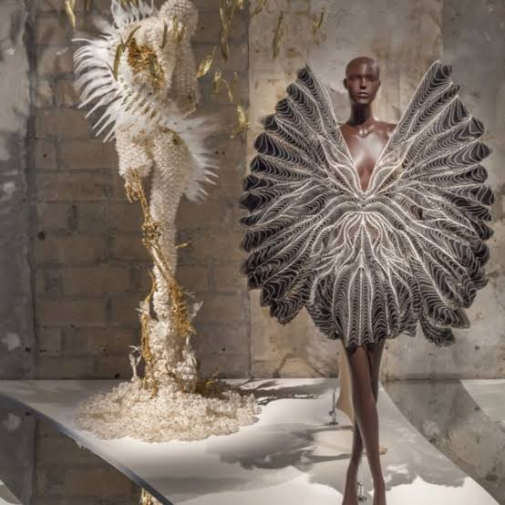
The future of textiles incorporates living organisms for photosynthesis, biodegradation, and self-repair capabilities.